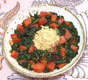

|
Spinach & Tomato SaladBurma | ||||
| Serves: Effort: Sched: DoAhead: |
5 salad ** 25 min Yes |
This flavorful salad is rather intense, so serving portions should be fairly small. It depends on an array of Southeast Asian pantry staples, which should be on hand in any kitchen doing SE Asian cooking. | |||
|
10 10 ------- 2 1 1 1/4 1/2 1/3 1/2 ------- 1-1/2 |
oz oz --- t T T t T t T --- T |
Spinach Leaves (1) Tomatoes, ripe -- Seasonings Shrimp Powder (2) Fried Shallots (3) Shallot Oil(3) Chili Powder (4) Fish Sauce (5) Salt Lime Juice -- Garnish Roasted Peanuts (6) |
Do Ahead -
|